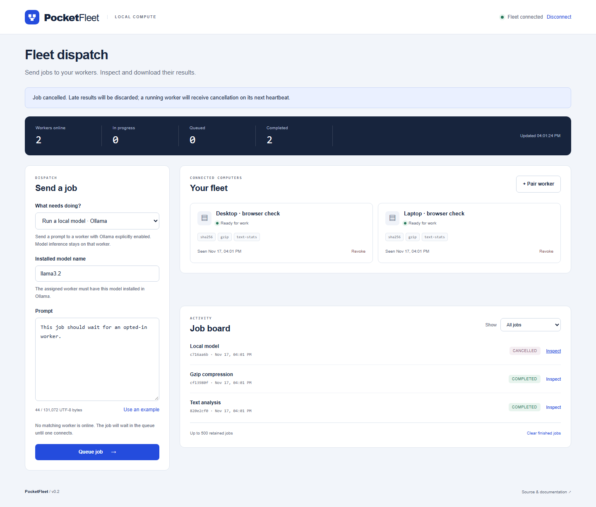

A job queue for the computers you own.
Pair a spare laptop or desktop, send it a job, and inspect what comes back. Try the whole workflow on one machine first.
Run the demo
npx --yes --package=https://github.com/alfonza1/pocketfleet/releases/download/v0.3.0/alfonza1-pocketfleet-0.3.0.tgz pocketfleet demoWhat you'll see
Two worker processes receive the same log. One counts its words. The other returns a gzip file you can download from the local dashboard.
Requires Node.js 22.12+. Ctrl+C closes the temporary fleet.
Connect your hardware
Keep a coordinator running on one computer. Pair a worker on another using a one-use code over HTTPS. Workers pull the jobs they support. An Ollama-enabled worker can run prompts on a model already installed there.
Set up a persistent fleet →